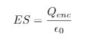
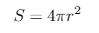
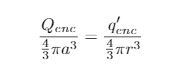
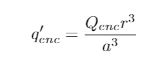
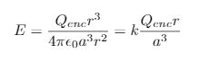
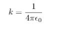
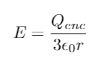
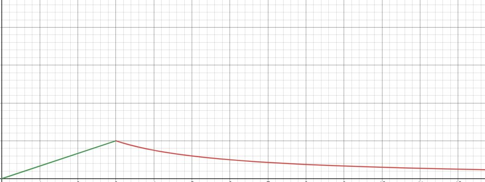

El campo eléctrico de una esfera aislante se puede halla por medio de ley de Gauss. La ley de Gauss se representa por medio de la siguiente ecuación:
De esta ecuación es importante conocer que es la superficie y la carga encerrada.
La superficie hace referencia a la figura gaussiana (esfera que encierra el campo) la cual será:
Y la carga encerrada, si la figura gaussiana esta fuera de la esfera será la carga total de la esfera pero si no, será una porción de esta la cual sale de esta igualdad
Donde a es el radio de la esfera y q´ es la carga encerrada que se esta buscando se despeja de lo anterior y se obteniendo :
Y de la primera ecuación obtenemos el campo eléctrico existente para cuando la gaussiana esta dentro de la esfera:
Recuerde que k es::
y para cuando el campo este fuera de la esfera:
En el siguiente video puede orientarse y entender en que cambia si en los datos no tiene la carga si no la densidad de esta:
Si se grafican las dos ultimas ecuaciones tomando las consideraciones anteriores del campo en función del radio de la gaussiana:
La parte verde representa como crece el campo a medida que la superficie encierra la esfera, el pico representa el campo en la superficie de la esfera y en la parte roja se muestra como disminuye el campo fuera de la esfera.
Campo eléctrico en una esfera conductora y mas